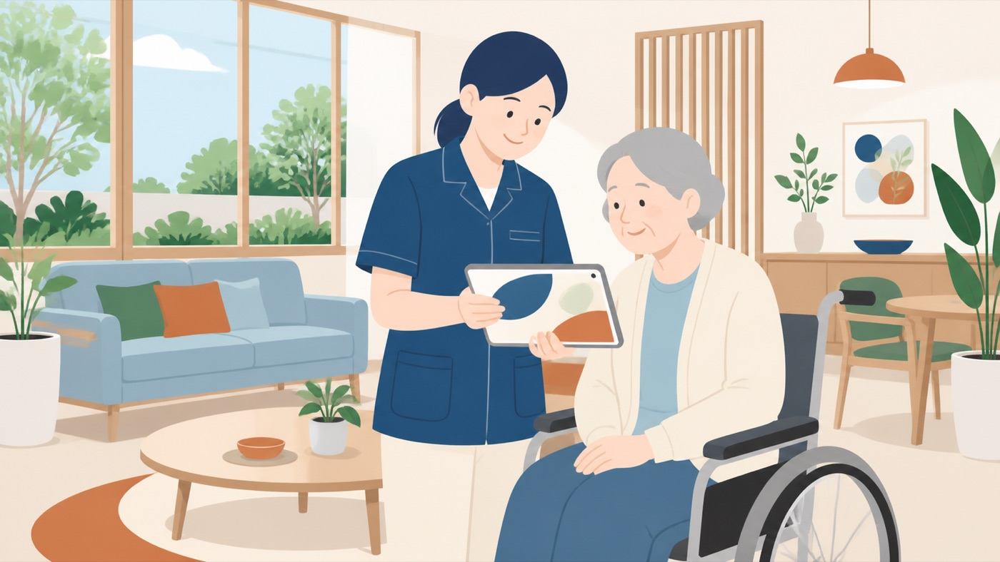
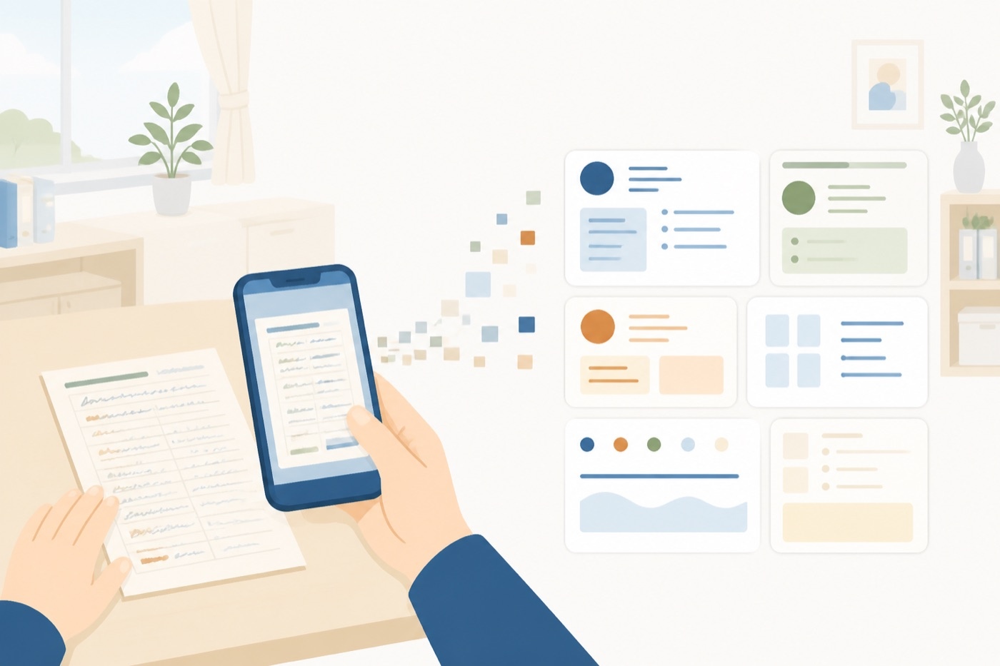
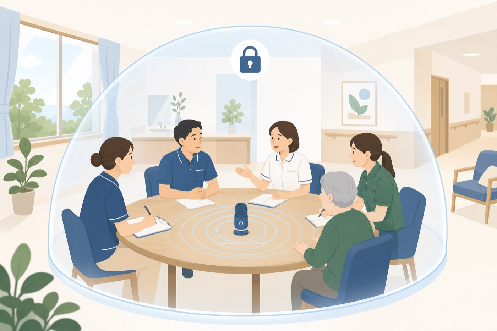
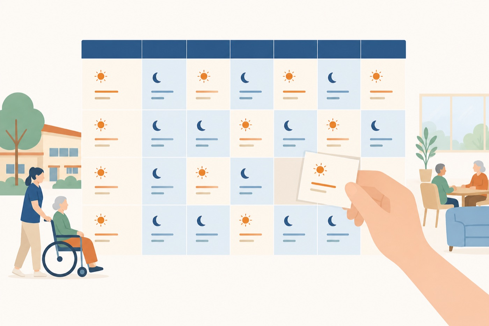
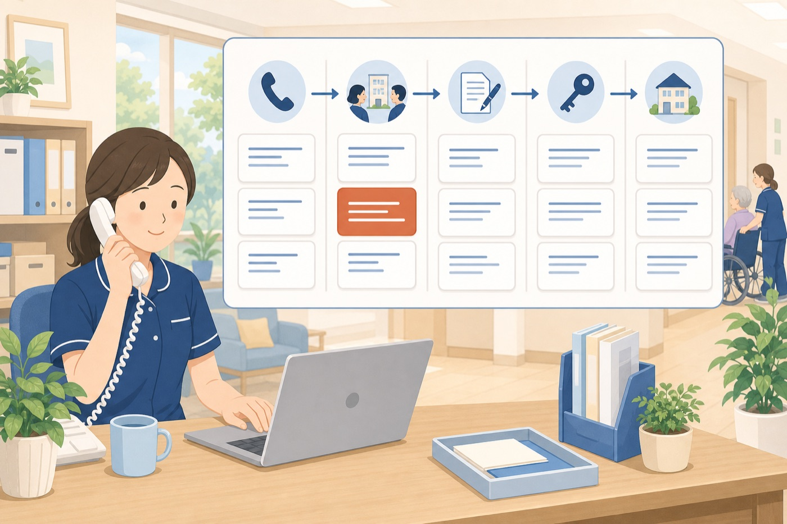
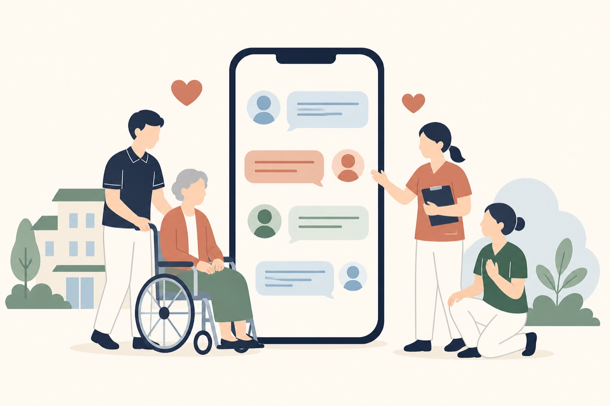
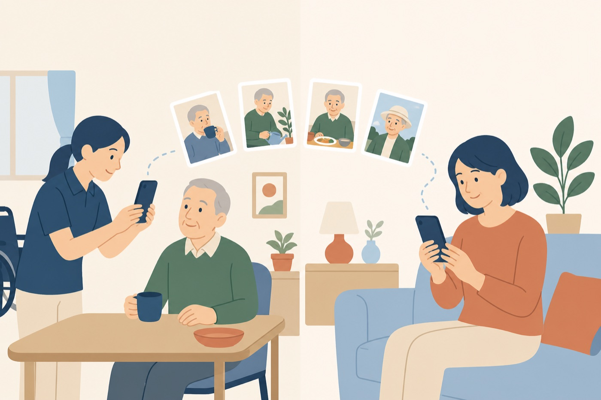
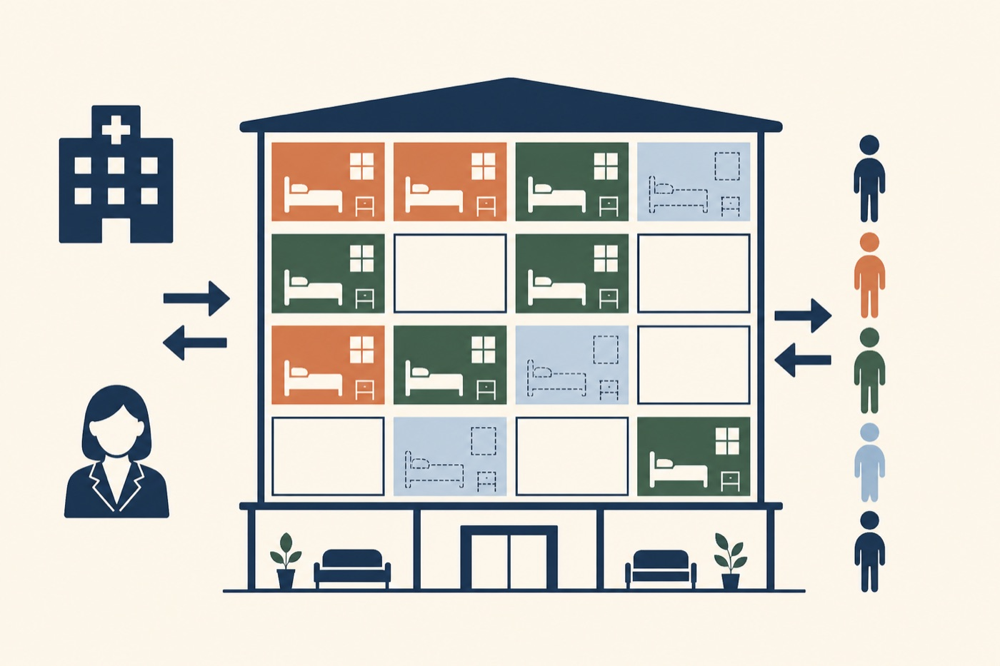

介護施設のみなさまへ
介護のDXで、こんなことができます。
既製品をそのまま入れるのではなく、その施設のルールに合わせた形にできます。

「システムを入れたのに、結局Excelに戻った」。よく伺うお話です。理由ははっきりしています。
システムが動くのは当たり前です。現場が使ってくれなければ、1円の価値もありません。続くものには共通点があります。
機能の数ではなく、画面の分かりやすさが続くかどうかを決めます。「説明書を読まないと使えないもの」は、どれだけ高機能でも現場で止まります。
AIを使った開発なら、従来のシステム開発より大幅に安く、短い期間で形にできます。だから「まず1つだけ小さく試す」ができます。
使ってみて初めて分かることがあります。「ここが違った」を後から直せる前提で作られているか。現場の声で育てていける形かどうかが分かれ目です。
介護施設でよくご相談いただくものを8つ挙げました。ここに無いものも作れます。すべて実際に触れるデモがあります。各カードの「デモを触る」からお試しください。

TOOL 01
いま：手書きの記録を、あとからPCに打ち直している。夜勤明けの職員が30分残って入力。医師の診断書や検査結果は紙のままファイルに綴じられ、必要なときに探せない。
紙の記録用紙も診断書も、スマホで撮るだけ。AIが読み取って利用者ごとに自動で整理します。「あの方の直近3か月の様子」がその場で出せます。紙をなくすのではなく、紙のまま使いながらデータにもなる形にします。
加算の記録漏れも防げます。記録が算定の要件になっている加算は、記録が抜けるとそのまま減収です。「今月まだ記録が足りていない方」を一覧で出すこともできます。
現場の操作：カメラで撮る。それだけです。

TOOL 02
いま：サービス担当者会議やカンファレンスの議事録づくりに、毎回1時間。利用者さんの病歴やご家族の事情が入るので、クラウドの文字起こしサービスは怖くて使えない。
録音するだけで、要約・決定事項・次までの宿題まで自動で整理します。処理は施設内のパソコンで完結し、音声も文章もネットに一切出ません。ここは他社が最も苦手にしている部分です。
現場の操作：会議の前に、録音ボタンを1回押すだけ。
TOOL 03
いま：見学に来られたご家族に「あとで見積もりをお送りします」と言って、その日のうちに決まらない。要介護度やオプションで金額が変わるので、その場で出せない。
要介護度・居室タイプ・オプションを選ぶだけで、その場で見積書のPDFが出ます。ご家族が帰るときに、紙で持って帰っていただけます。「持ち帰って家族と相談」の材料をその日に渡せるのが、いちばん大きな違いです。
現場の操作：タブレットで3〜4回タップ。

TOOL 04
いま：夜勤手当、処遇改善加算の配分、非常勤の変則シフト。市販ソフトは必ずどこかではみ出して、結局Excelで手直ししている。ここが一番のご心配だと思います。
自動計算に人を合わせるのではなく、人の判断をシステムが記録する作りにします。その場で手修正でき、「いつ・誰が・なぜ直したか」が履歴に残ります。例外を消すのではなく、例外を安全に扱えるようにします。
現場の操作：いつものシフト表を取り込む。直したい所はその場で直す。

TOOL 05
いま：問い合わせの電話がメモ用紙のまま。「あの方どうなった？」が担当者の記憶頼み。見学に来たきり連絡が途切れた方が何人いるのか、誰も把握していない。
問い合わせ→見学→仮申込→入居→退居までを1本の流れで管理します。放置されている案件が一覧で見えます。ご家族との連絡履歴も残るので、担当が変わっても引き継げます。
現場の操作：電話を受けながら、1つの画面に入力するだけ。

TOOL 06
いま：辞める理由は、辞めてから分かる。「相談してくれれば」と毎回思う。就業規則の質問が管理者に集中して、本来の仕事が進まない。
いつものLINEから、匿名で悩みを相談できる窓口を用意します。就業規則の質問はAIが参照元つきで即答。パワハラ防止法など5つの法令対応も同時に満たせるので、「いずれ必ず要る仕組み」を定着対策として先に入れられます。
現場の操作：LINEを友だち追加するだけ。アプリ不要・月額480円〜／人。

TOOL 07
いま：遠方のご家族から「最近どうですか」の電話。そのたびに現場が手を止める。満足度調査はやりたいが、配って集めて集計する手間が現場にない。
施設での様子を写真つきでLINE配信。アンケートも配信・回収・集計まで自動化します。運用そのものを外部に任せることもできますので、現場の手間はゼロにできます。
現場の操作：写真を選んで、送信ボタンを押すだけ。

TOOL 08
いま：空室が出てから慌てて探す。病院やケアマネさんへの空室連絡が、担当者の手作業と記憶に頼っている。どこからの紹介が多いのかも数字で分からない。
空室予定と待機中の方を一覧で管理し、空きが出たら紹介元へ最新の空室状況を自動でお知らせ。紹介してくださった事業所ごとの実績も見えるので、どこを大事にすべきかが数字で分かります。
現場の操作：状況が変わったら1タップ。
上の8つは、すべて実際に動くデモをご用意しています。スマホでもタブレットでも触れます。
介護事業所向けの補助制度は手厚く用意されています。自己負担を減らして進めるのが前提です。
| ツール | 初期費用の目安 | 備考 |
|---|---|---|
| 01 介護記録・診断結果まとめ | 40〜80万円 | 読み取る帳票の種類数で変動 |
| 02 会議議事録ツール | 20〜40万円 | ローカルAI構成の場合は機材費が別途 |
| 03 簡易見積もり作成 | 15〜30万円 | 最初の1つに向いています |
| 04 給与計算ツール | 40〜80万円 | 例外パターンの数で変動 |
| 05 顧客管理システム | 30〜60万円 | — |
| 06 職員のLINE相談窓口 | 月額480円〜／人 | 初期費用あり・既製サービスを利用 |
| 07 ご家族LINE配信・アンケート | 15〜30万円 | 運用代行は別途月額 |
| 08 空室・待機リスト管理 | 20〜40万円 | — |
※現時点の概算です。要件を伺ったうえで正式なお見積りを提出します。段階導入が可能です。
愛知県内の指定介護サービス事業所が対象。介護ロボット・ICTの導入費用に対して、要件を満たせば補助率は最大3/4（一定の組み合わせで4/5）。介護記録・情報共有系のシステムが対象になります。
※令和8年度の要綱・受付状況は要確認
人手不足の解消を目的とした設備・システム投資が対象。補助率1/2（小規模事業者は2/3）。従業員規模により補助上限が変わります。
※2026年3月19日に制度改定あり
全部を一度に入れる必要はありません。いちばん時間を取られている1つから始めるのが、失敗しない順番です。
| STEP | 内容 | 期間の目安 |
|---|---|---|
| 1 | 現場の困りごとを伺う（1〜2時間） 実際に使っている帳票・Excelを見せていただきます | ここで優先順位が決まります |
| 2 | 画面イメージのご提示 | 約1週間。作る前に見た目で確認いただきます |
| 3 | 試作版で実際に触っていただく | 2〜4週間。ここで「違った」が出るのが正常です |
| 4 | 現場の声を反映して調整・本稼働 | 1〜2か月 |
| 5 | 使いながら育てる | 継続。追加要望はその都度 |
資料を先に作るより、現場を見せていただくほうが早く進みます。実際に使っている帳票やExcelを見せていただければ、その場で「これは作れます／これは既製品で足ります」までお答えできます。
お見積りは無料です。まずは1〜2時間、お時間をいただけますでしょうか。